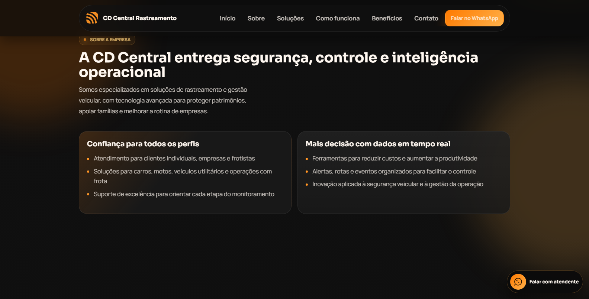

Engenharia de Software
UNDB - 2º período
Formação voltada para fundamentos de tecnologia, programação, engenharia de software e desenvolvimento de soluções digitais.
Portfólio profissional
Estudante de Engenharia de Software com foco em desenvolvimento tecnológico, interfaces web responsivas e soluções digitais simples, funcionais e bem organizadas.
Sobre mim
Sou estudante de Engenharia de Software pela UNDB, atualmente no 2º período, com foco em desenvolvimento tecnológico e forte interesse em inovação aplicada ao ensino.
Tenho conhecimentos em informática, Pacote Office, lógica de programação, Python básico e JavaScript básico voltado para front-end. Também possuo experiência com HTML5 e CSS3 para criação e estilização de interfaces web.
Sou uma pessoa pontual, organizada e responsável, com facilidade para trabalho em equipe e boa comunicação. Busco evoluir tecnicamente, aplicar boas práticas e contribuir em projetos onde eu possa desenvolver minhas competências profissionais.
Formação acadêmica
UNDB - 2º período
Formação voltada para fundamentos de tecnologia, programação, engenharia de software e desenvolvimento de soluções digitais.
Habilidades
Projetos

Projeto 1
Site institucional desenvolvido para uma empresa de soluções de rastreamento veicular, monitoramento em tempo real e gestão de frotas.
Criar uma página comercial profissional para apresentar serviços, destacar benefícios e facilitar o contato com clientes que buscam rastreamento veicular para pessoa física, empresas e frotas.
O site apresenta a empresa, mostra soluções para públicos diferentes e permite que o usuário solicite atendimento por formulário. O JavaScript valida os campos e envia os dados para uma rota de API, que normaliza as informações e registra o contato no Supabase.
Projeto 2
Site de loja virtual com foco em moda feminina, criado para apresentar produtos de forma elegante, organizada e responsiva.
Criar uma vitrine digital profissional para produtos de moda feminina, facilitar a navegação dos usuários e fortalecer a presença digital da marca.
A página inicial apresenta destaques da loja, banners e principais produtos. O usuário pode navegar pelos itens e visualizar informações, imagens, preços e detalhes em uma experiência simples no desktop, tablet e celular.